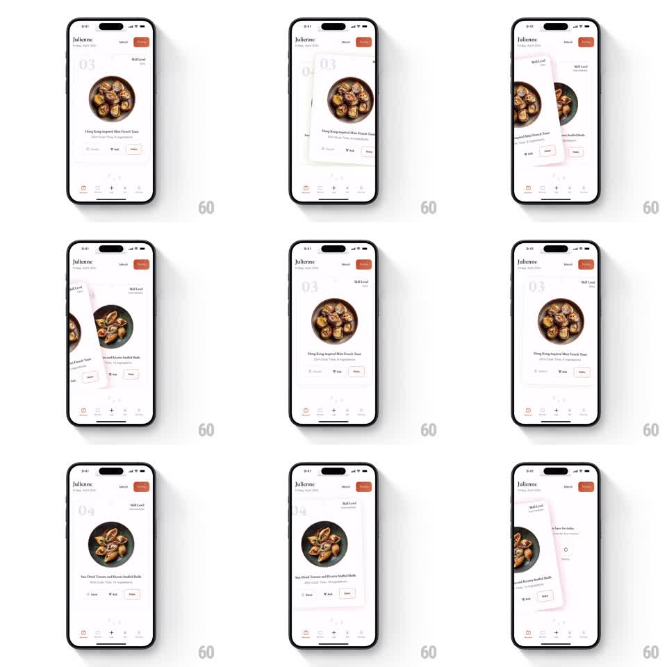

Media
Frame-by-frame

Rebuild this interaction 1:1: Julienne's recipe card stack - swiping a recipe card rotates and flings it off-screen while the next card scales and settles into place, with the ghost index number ticking up.

Rebuild this interaction 1:1: Julienne's recipe card stack - swiping a recipe card rotates and flings it off-screen while the next card scales and settles into place, with the ghost index number ticking up.
## Integration
Integration: stack-agnostic spec - springs given as stiffness/damping, timed motions as duration + curve; map every value to your framework and animation library of choice.
## Scene
White recipe app "Julienne": a card with a large circular dish photo ("Hong Kong-inspired Mini French Toast"), skill-level label, a huge ghosted index "03" behind, and a Save / Ask / Make action row; the next card ("Sun-Dried Tomato and Ricotta Stuffed Shells", index "04") waits behind. Bottom tab bar with five icons.
## Motion spec
Pattern: rotating swipe dismissal with settle-in spring.
- Drag: the top card follows the finger 1:1 on X, rotating proportionally (dragX/width * 15deg) and lifting a soft shadow; the card beneath scales 0.94 -> 1 and rises ~10pt in sync with drag distance.
- Release past threshold (~35% width or fling velocity): the card continues off-screen with the release velocity, rotation increasing to +-20deg, fading slightly after it leaves the edge (300ms).
- Release short of threshold: the card springs back to center (spring ~300/18, rotation -> 0).
- On dismissal: the next card completes its scale-up with a settle overshoot (spring ~280/16), and the ghost index crossfades to the new number ("03" -> "04") with a 6pt upward drift (250ms).
- The action row and header stay fixed; only the card layer and ghost number move.
## Calibration
- Rotation pivot is the card's bottom-center - it swings like it's pinned at the base.
- Two-card depth max: exactly one card visible behind the top card.
## Reduced motion
Cards slide off without rotation; the next card fades in at full scale.
## Don't miss
- The circular dish photo stays circular through all rotation - clip to the card, not the image.
- The ghost index is decorative and huge (~120pt, 8% opacity); it never intercepts touches.